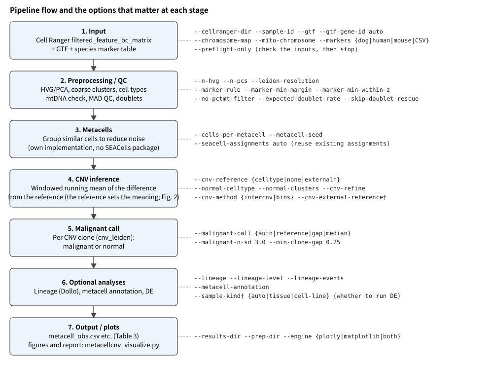
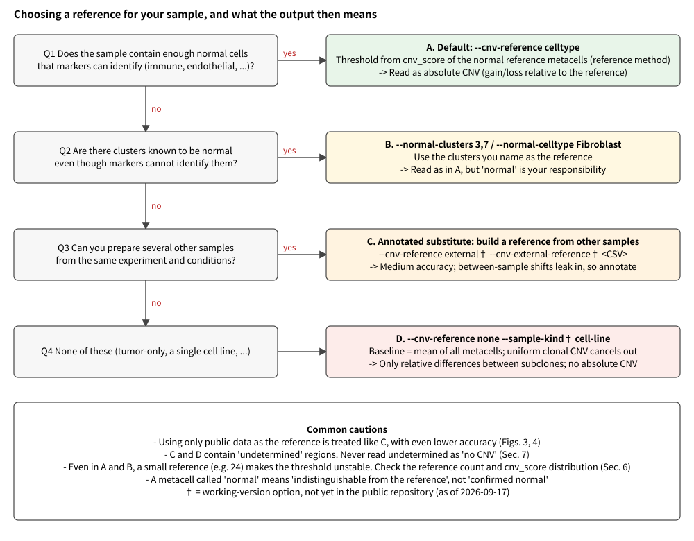
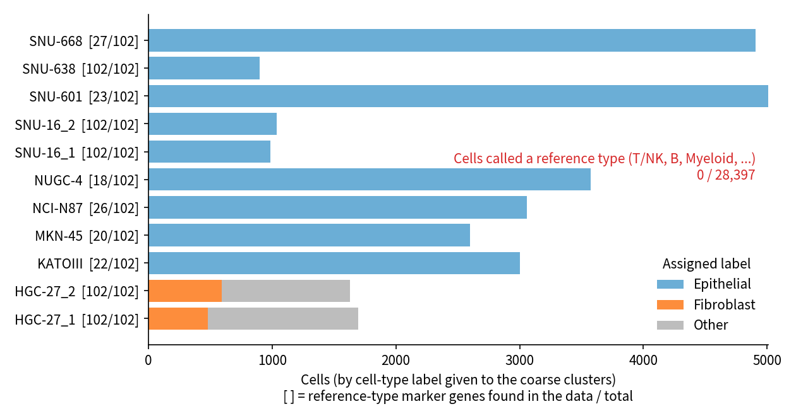
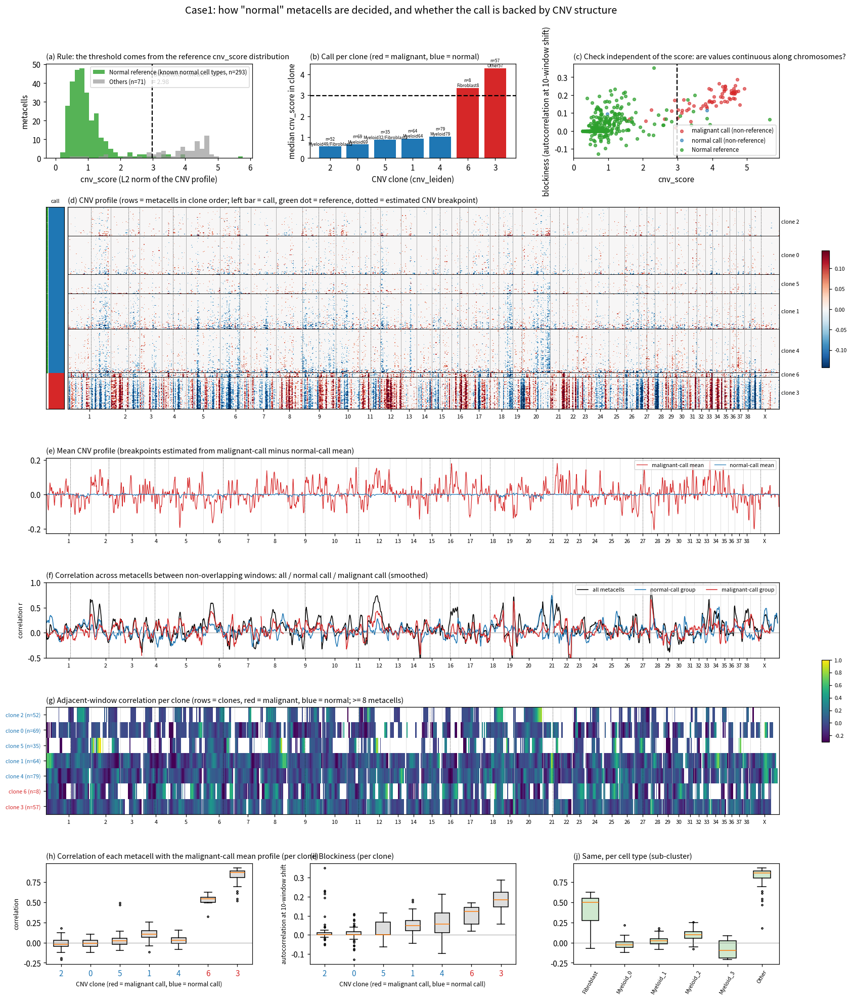
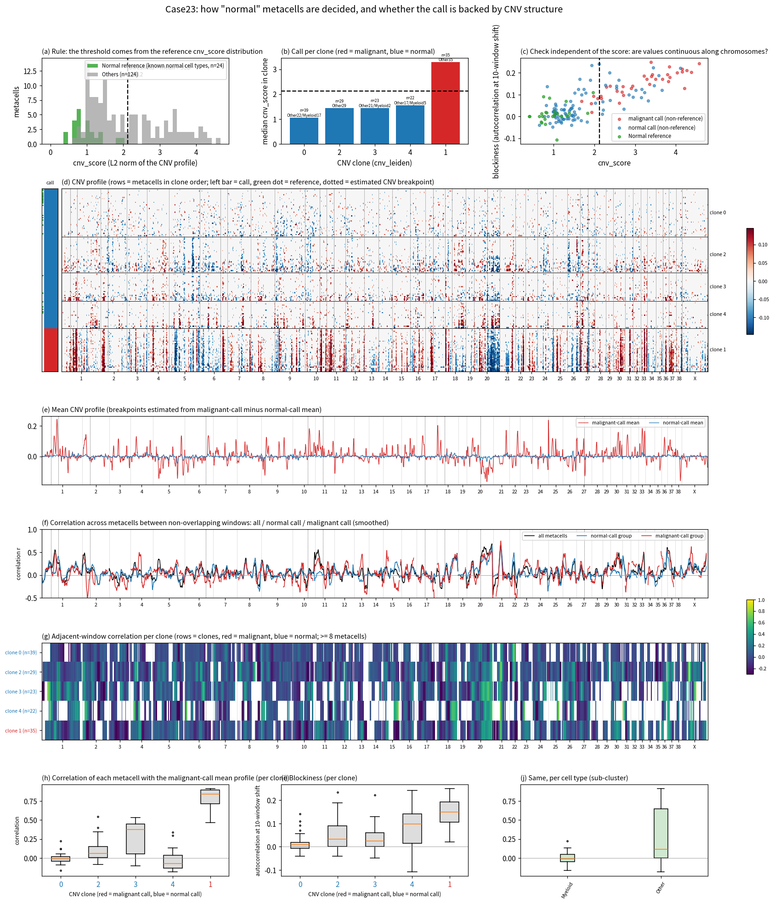
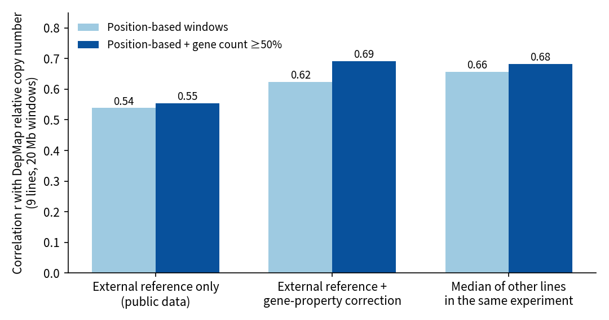
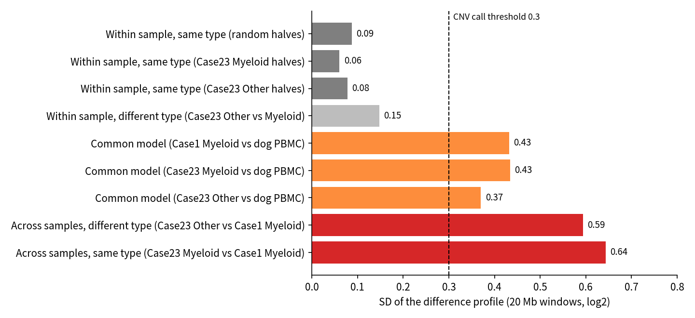

Starting from Cell Ranger output: which options to use, how to run, and what the output then means.
The pipeline now has several processing and calibration steps. This guide lays them out in the order "input → choice → meaning of the output". If you only want the conclusions, read Sec. 3 (choosing a reference) and Sec. 8 (checklist for reading results).
日本語版: index.html / pipeline_guide.md
metacellcnv.py (as of 2026-09-29). Option names and defaults were checked against --help and the code.--sample-kind, --cnv-reference external, --cnv-external-reference, and build_external_cnv_reference.py, which builds the external reference.
{a|b} are choices; † = working version only.
The choice of reference in stage 4 changes the meaning of the output more than anything else (Fig. 2, Sec. 3).The idea of the pipeline is as follows.
cnv_leiden) are split into malignant and normal by the size of the CNV (cnv_score).In other words, what the reference is decides what "CNV" is relative to.
| Input | Option | Key points |
|---|---|---|
| Cell Ranger output | --cellranger-dir |
filtered_feature_bc_matrix/ (matrix.mtx, barcodes.tsv, features.tsv or genes.tsv; gzip or not). Several can be given; then give the same number of --sample-id values |
| Gene coordinates | --gtf, --gtf-gene-id auto |
A GTF that matches the reference genome. The gene-name attribute is gene_name in GENCODE and gene in NCBI RefSeq. auto detects it |
| Chromosome names | --chromosome-map |
An NCBI assembly report that converts RefSeq NC_... to chr1.... Not needed for GENCODE (chr1...) |
| Mitochondria | --mito-chromosome |
Sequence ID of mtDNA. Known IDs (chrM, MT, NC_002008.4, ...) and detection from the GTF work by default. Dog CanFam6 is NC_002008.4 |
| Cell-type marker table | --markers {dog,human,mouse,CSV path} |
Default is dog. Only four dog panels (Macrophage / Endothelial / Fibroblast / Epithelial) have been validated on real data; the other panels and the human and mouse tables only had their naming converted (a warning appears when an unvalidated panel assigns a label) |
Before a run, you can check the inputs for inconsistencies with the command below (no heavy processing is done).
python metacellcnv.py --cellranger-dir <sample>/outs/filtered_feature_bc_matrix \
--gtf genes.gtf --gtf-gene-id auto --markers human --preflight-only
It checks for the required files, the match rate between gene names and the GTF, the presence of mtDNA genes, the presence of marker genes, and chromosome names.
If the match rate is low, suspect the value of --gtf-gene-id.

Table 1. Reference methods and the meaning of the output
| Method | Main options | Meaning of CNV | What is lost / caution |
|---|---|---|---|
| A. Normal cells in the sample as reference (default) | --cnv-reference celltype |
Gain/loss relative to the normal reference (absolute CNV) | With few references the threshold is unstable (Sec. 6) |
| B. Name clusters known to be normal | --normal-clusters 3,7, --normal-celltype Fibroblast |
Same as A | Whether the named clusters are really normal is your responsibility. Fibroblast / Epithelial can be the tumor itself, so they are not references by default |
| C. Other samples as reference (†) | --cnv-reference external --cnv-external-reference <CSV> |
Gain/loss relative to other samples; between-sample shifts leak in | Medium accuracy (Sec. 7). Always annotate the result |
| D. Mean of all metacells as reference | --cnv-reference none (single line: --sample-kind cell-line†) |
Only the relative difference between subclones | CNV shared by a uniform clone equals the baseline and disappears |
Keep the following four points in mind.
--cnv-reference celltype (default), the run stops with "正常参照が確保できません" (normal reference cannot be secured). For tumor-only samples, specify --cnv-reference none explicitly. (The message also suggests --normal-clusters, --normal-celltype, and --cnv-refine. --cnv-refine re-uses clones that were flat in the first pass as the reference; a uniform tumor has no flat clone, so it cannot be used.)unassigned.--cnv-reference none split 11 metacells into 4 malignant and 7 normal. The clone medians differ by only 0.065, and the cnv_score ranges of the two groups overlap (0.70-1.30 and 0.88-1.34).INTERPRETATION_CAVEATS.txt also says "no serious problem detected".putative_malignant is not a tumor vs normal distinction. It is only an internal split by cnv_score and must not be used for DE.--sample-kind auto (†, default) treats the sample as a single line and skips DE when there are fewer than 3 reference metacells. The CNV call itself is not skipped.The minimal flow has three steps: check, main run, plots. Replace <...> with your own values.
Table 2. Run examples by situation
| Situation | Command (essentials only) |
|---|---|
| Dog tumor tissue (with normal cells such as immune cells) | python metacellcnv.py --cellranger-dir <dir> --gtf <refseq.gtf> --gtf-gene-id gene --chromosome-map <assembly_report.txt> --mito-chromosome NC_002008.4 --markers dog --out-dir results/<sample> |
| Human cell line (tumor only, single line) | python metacellcnv.py --cellranger-dir <dir> --gtf gencode.v50.annotation.gtf --gtf-gene-id auto --markers human --cnv-reference none --out-dir results/<sample> |
| Re-analyze with a different reference only (reuse metacells) | Add --seacell-assignments results/<sample>/cell_to_metacell.csv and a different --cnv-reference to the command above, and write to a different --out-dir |
| Use other samples as reference (†) | First build a pseudo-bulk reference with python build_external_cnv_reference.py --cellranger-dir <ref1> --cellranger-dir <ref2> --out ref.csv, then add --cnv-reference external --cnv-external-reference ref.csv to the main run |
| Also output lineage | Add --lineage (uses loss events only; default --lineage-events loss) |
| Plots and report | python metacellcnv.py --visualize --results-dir results/<sample> [--prep-dir prep/<sample>] |
Habits recommended before and after a run:
--seacell-assignments). The metacell composition is then identical, so the only difference is the reference.INTERPRETATION_CAVEATS.txt and malignant_call.txt change with every run.malignant_call.txt and the distribution of the reference cnv_score (Figs. 6 and 7, panel (a)) before writing conclusions.Table 3. Output files (directly under --out-dir)
| File | Content | Key points for reading |
|---|---|---|
metacell_obs.csv |
Per-metacell table | See Table 4 below |
malignant_call.txt |
Method and basis of the malignant call, in one line | States the method (reference or gap method) and the threshold |
INTERPRETATION_CAVEATS.txt |
Cautions specific to this run | Must read. When comparing several samples, read the one from each sample |
cnv_metacells.h5ad |
metacell x window CNV matrix | obsm['X_cnv'] holds the CNV (sparse; small values are set to 0 by a dynamic threshold); uns['cnv']['chr_pos'] holds the start of the windows of each chromosome |
clone_chromosome_profiles.csv |
Mean CNV per clone x chromosome | Source table of the heatmap. With --cnv-refine, a _refined version is also written |
cell_to_metacell.csv |
Barcode → metacell mapping | Also used for reuse (--seacell-assignments) |
metacells.h5ad, singlecells_qc.h5ad |
Single-cell data after metacell aggregation / after QC | The latter is large |
qc_metrics.csv, metacell_metrics.csv, metacell_mito_qc.csv, mito_gene_profile.csv |
QC and mtDNA check results | For a sample with an unnatural mtDNA composition, consider --no-pctmt-filter |
de_malignant_vs_normal.csv |
DE of malignant vs normal | Metacells from one sample are pseudo-replicates, so p-values cannot be used for inference. The groups are defined by CNV, so it is also circular |
cnv_lineage.nwk, cnv_lineage_branches.csv, cnv_lineage_events.csv, cnv_lineage_report.json |
Lineage (only with --lineage) |
If has_structure is false, do not read the tree as a lineage |
environment.lock.txt |
Record of the run environment | Keep for reproducibility |
Table 4. Main columns of metacell_obs.csv
| Column | Meaning |
|---|---|
n_cells, sample_id |
Number of cells in the metacell, sample of origin |
cell_type |
Marker-based cell type, with the coarse-cluster number as in Myeloid_0. Used to decide whether a metacell is a reference |
cnv_score |
L2 norm of the CNV profile. Larger = further from the reference |
cnv_leiden |
Clone defined by CNV. The malignant / normal call is made per clone |
putative_malignant |
malignant / normal / unassigned. normal means "indistinguishable from the reference". In runs without a reference (gap method) this is an internal split by cnv_score, not tumor vs normal |
mito_*, ratio_outlier, etc. |
Quality flags derived from mtDNA |
A reference is a metacell in a cluster that the marker-based cell-type annotation called a "known normal cell type".
--marker-min-margin, default 0.02) and the within-cluster z (--marker-min-within-z, default 2.0) exceed their thresholds. Otherwise the label is Other.use_as_normal_reference in the marker table), its metacells are references. In the --markers dog|human|mouse tables, nine types can be references: T/NK, B, Plasma, Myeloid, Macrophage, Mast, Endothelial, SmoothMuscle, and Leukocyte. Fibroblast and Epithelial are not included (they can be added with --normal-celltype).The same reference set is used in two places.
--malignant-n-sd) of the cnv_score of the reference metacells themselves. A clone whose median exceeds it is malignant.A reference is a set of cells inferred to be normal from expression markers, not cells confirmed to be normal genetically. If the tumor itself looks like a reference type, as in a myeloid tumor, its CNV is cancelled together with the reference and becomes invisible.

Read this with care. Six of the 11 samples (KATOIII, MKN-45, NCI-N87, NUGC-4, SNU-601, SNU-668) have a published feature list trimmed to about 13,000-14,000 genes, and only 18-27 of the 102 reference-type markers are present in the data (genes without expression seem to have been removed on publication, and many immune-cell markers are missing). Therefore, "zero references" can be taken as strong evidence that the rule did not mistake tumor cells for references only in the other five samples, where all markers are present (two HGC-27, two SNU-16, and SNU-638; 6,248 cells and 80 metacells in total). In the six samples, the reference-type score is computed from a few genes, so the power to detect a reference is itself weak.
Even among the five complete samples, 2 of 27 coarse clusters (363 cells of HGC-27) had a reference type (Macrophage) as the top score, but the score was about ±0.003, essentially 0, and the rule (margin and z) dropped them to Other.
Zero references has two meanings.
If --marker-min-margin is lowered close to 0, those 363 cells would be called Macrophage, and tumor cells might enter the reference.

cnv_score in the references (green) and the threshold (dashed; mean + 3 SD = 2.98). (b) Median per clone; red = malignant, blue = normal.
(c) Relation to "blockiness" (autocorrelation at a lag of 10 windows within chromosomes), which is independent of cnv_score.
(d) CNV heatmap (rows are metacells ordered by clone; the left bar is the call, dotted lines are estimated change points).
(e) Mean profile of the malignant-called and normal-called groups. (f)(g) Correlation between non-overlapping windows (overall, by group, by clone).
(h)(i)(j) Correlation with the mean profile of the malignant-called group, and blockiness, by clone and by cell type.In Case1, the malignant and normal calls separate clearly. The median blockiness is 0.17 for the malignant call and 0.016 for the normal call. None of the 299 normal-called metacells exceeds the 10th percentile of the malignant-called group (correlation 0.55).

In Case23, 18 of the 113 normal-called metacells have a correlation of 0.3 or more with the mean profile of the malignant-called group. With few references and few reads per cell (about 426 genes per cell), cutting clones near the threshold can put mixed metacells containing tumor cells, or low-purity tumor clones, into "normal".
Note that the correlation of adjacent non-overlapping windows (panels (f)(g) of Figs. 6 and 7) is low within groups (0.04-0.1), and its difference across change points is not consistent. We think this is because metacells within a clone are in a similar state and vary little. What can be used as evidence for the call is blockiness and the correlation with the tumor pattern. Change points are estimated automatically from the difference between the malignant-called and normal-called groups and are coarser than the real boundaries (for reference only).
We measured on data with known truth how far CNV can be trusted when there is no reference in the sample (C and D in Table 1).
The policy in this section is validated but not implemented in the pipeline. (The scripts to reproduce it are in _geo_cnv/ of the working directory and are not in the public repository. The result tables are in docs/data/.)
OmicsCNGene (relative copy number per gene). log2(copy number) was the truth; in 20 Mb windows, gain > 0.3 and loss < -0.3.

[Status] Items 1-5 are not implemented. The current --cnv-reference external uses one pseudo-bulk profile pooled from several samples as the reference, which differs from the validated "median of other lines".
INTERPRETATION_CAVEATS.txt and malignant_call.txt (they state the method, threshold, and number of references)?malignant_call.txt shows the gap method, did you read putative_malignant as tumor vs normal? (With 2 clones it always splits in two.)has_structure is true?| Symptom | Cause and remedy |
|---|---|
| Low match rate, many genes without coordinates | Check the value of --gtf-gene-id (gene or gene_name) and the gene-name format in features.tsv. Re-check with --preflight-only |
| RefSeq accessions do not become chromosome names | Give an NCBI assembly report to --chromosome-map |
| Warning that mtDNA genes are not found | The Cell Ranger reference may not contain mtDNA. QC by pctMT will not work, so add --no-pctmt-filter |
| Stops with "正常参照が確保できません" (cannot secure a normal reference) | There is no reference-type cell. For a tumor-only sample, specify --cnv-reference none. If you know of clusters that are normal, name them with --normal-clusters (Sec. 3) |
| No DE because references are few | With fewer than 3 reference metacells the sample is treated as a single line and DE is skipped (--sample-kind†). The CNV call is still output |
All malignant calls are unassigned |
The gap method found no clear bimodality and abandoned the call. The same happens with a single clone. Lower --cells-per-metacell to raise resolution, or name the groups with --normal-clusters |
Reading cnv_metacells.h5ad with anndata 0.11.4 fails at uns/log1p/base |
The saved log1p is null. Copy the file and delete uns/log1p with h5py, then it can be read |
| Out of memory (doublet detection ran out of memory on an environment of about 4 GB) | Run samples with many cells on a machine with more memory |
Table 5. Files in docs/
| File | Content |
|---|---|
pipeline_guide.md, index.html |
Japanese guide (Markdown and HTML versions, same content) |
pipeline_guide.en.md, index.en.html |
English guide (Markdown and HTML versions, same content) |
build_html.py |
Builds index.html and index.en.html from the Markdown files |
make_diagrams.py |
Draws Figs. 1 and 2 (SVG); --lang ja\|en |
make_figures.py |
Draws Figs. 3-5 from the CSV files in docs/data/; --lang ja\|en |
make_call_figure.py |
Draws Figs. 6 and 7 (evidence for the normal call) from cnv_metacells.h5ad and metacell_obs.csv; --lang ja\|en |
data/pos_vs_count.csv |
Source table of Fig. 3 (correlation and AUC by reference x window construction x window size) |
data/cross_case2_null.csv |
Source table of Fig. 4 (SD of the difference between normal sets) |
data/ref_count_clusters.csv, data/ref_count_samples.csv, data/geo_marker_coverage.csv |
Source tables of Fig. 5 (cell-type labels and reference counts per cluster and sample; number of reference-type markers present per sample) |
img/, img/en/ |
Figures (Japanese and English). Case1_normal_call.png and Case23_normal_call.png are Figs. 6 and 7 |
DepMap (OmicsCNGene.csv, Model.csv) and the GEO data (GSE142750) used as truth are not redistributed.